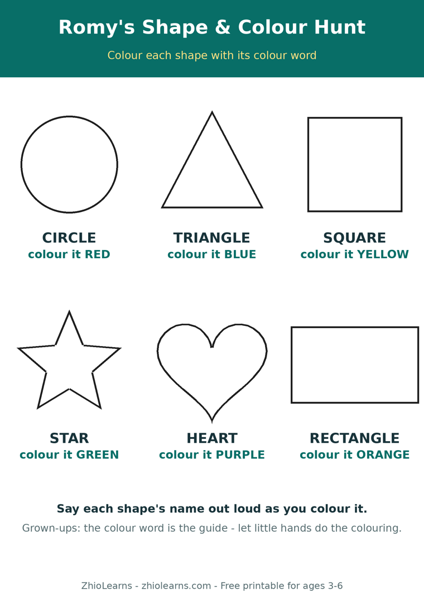

Red and Round: Why Two Little Words Are Better Than One
Your toddler can do it with one word already. Point at the ball: “Red!” Point at the plate: “Round!” Each word on its own is a small triumph, and it deserves the cheer it gets. But listen for the day the two words arrive holding hands — “red, round one!” — because something quietly bigger just happened.
One word is noticing. Two words together is describing. To say “red and round,” a small brain has to look at one single thing and hold two ideas about it at the same time: its colour and its shape. That pairing is the seed of comparing, sorting, and explaining — and, a little further down the road, of the careful looking that reading asks for.
You already own the whole classroom
The good news is that this needs no lesson, no flashcards, and no special toys. It only needs you to add one word to sentences you are already saying. Breakfast is full of pairs. Getting dressed is full of pairs. Tidy-up time, handled gently, is a pairs game in disguise:
“Your blue, square cracker — crunch!”
“The yellow, stripy sock. Now where is its pair?”
“Can you find me something green and pointy?”
“That’s the big, round one. This one is the little, round one.”
Say the pair, hand over the thing, and move on. No quiz at the end, no “now you say it.” Children absorb describing words the way they absorb everything else at this age: by hearing them used, warmly and often, about things they care about.
Start from two words they already own
A pair only works if both halves are already familiar. If “red” is solid and “circle” is solid, “red circle” will land beautifully. If one half is still wobbly, the pair will wobble too — and that is information, not failure. Drop back to the single word for a while. There is no schedule here and no falling behind; there is only the next small step, taken when the last one feels easy.
And if your child answers your careful “red, round one” with a cheerful “BALL!” — smile. They heard you. The pair went in. Their own version will turn up one ordinary morning, usually about something completely different, and usually at full volume.
From pairs of words to a whole hunt
Once pairs feel natural, give them somewhere to play. Spread a few household things on the rug — a red lid, a blue cup, a round cushion, a square book — and take turns calling for one by its pair: “Something red and round… go!” Getting it wrong is half the fun and most of the learning: the blue round one is a wonderful mistake, because it shows exactly which half your child heard.
Books built on pairs help the game along, because every page is a fresh chance to hear colour and shape arrive together, attached to things from a child’s real world.
A book of pairs on every page
Romy’s Shape & Color Adventure, for ages 2–4, pairs every shape and colour with familiar objects, so the describing starts on the page and walks straight off it: point, name both words, then hunt for “another red, round one!” around the house. It is the very first kind of learning little ones do — naming the world — wrapped in an adventure with their favourite raccoon.
Then try the free sheet below together: colour the shapes by their colour words first, and afterwards go hunting for the real shapes hiding in your own home.
🖨️ Free printable: Romy’s Shape & Colour Hunt

Colour six big shapes by their colour words, then hunt for real shapes at home with tick boxes, draw boxes, and a colour-hunt star strip. Two pages, ages 3–6, free, no sign-up needed to print it.
Download the free printable (PDF)📚 Today’s book
Find Romy’s Shape & Color Adventure and Romy’s other books in our little shop — and read Romy’s Alphabet Picnic free in the Storytime section.
See Romy’s books →🌿 More from the Parent Corner
When a task asks for two rules at once, little brains drop one. Here is how splitting the job in two makes sorting click.
Sort by One Thing at a Time →